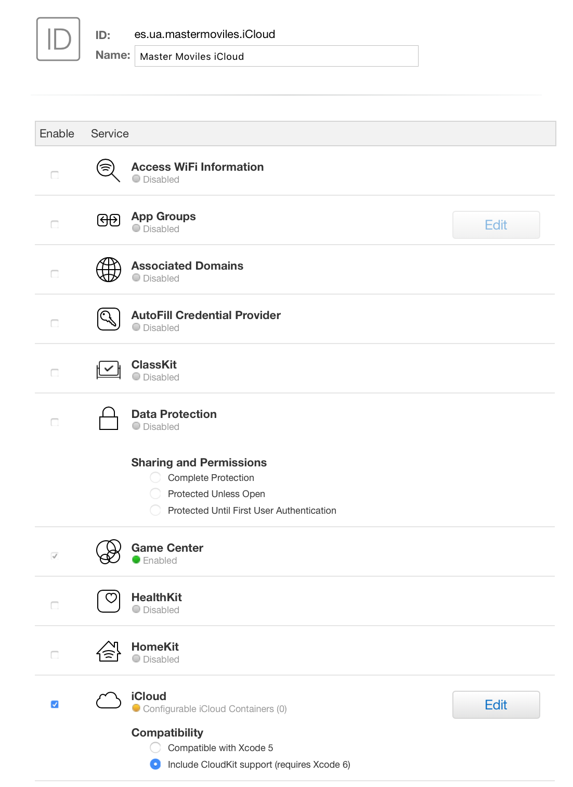
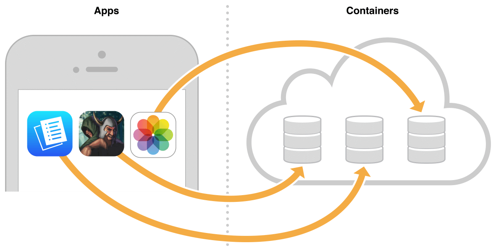
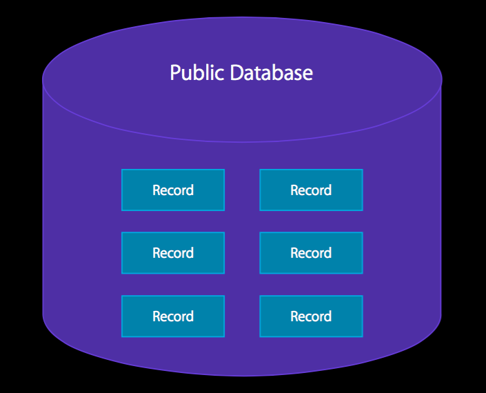
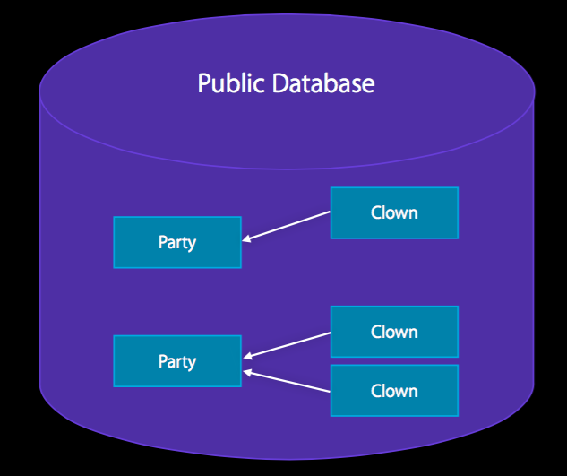
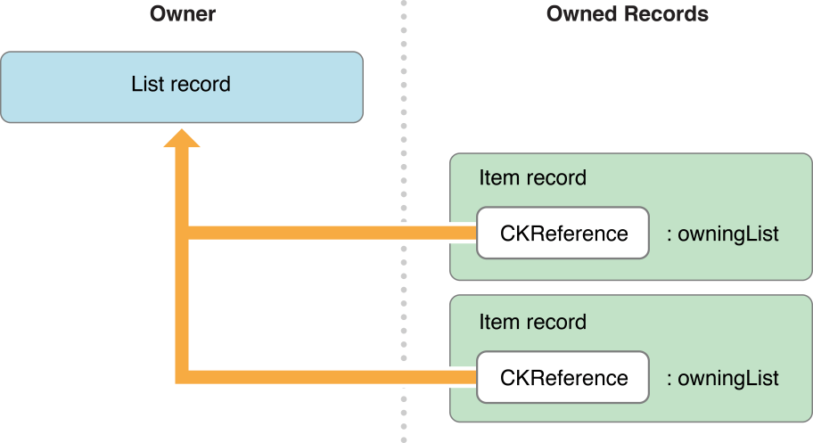
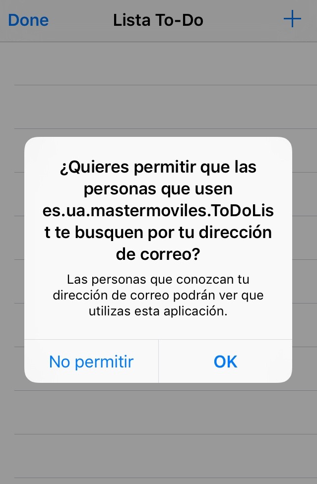
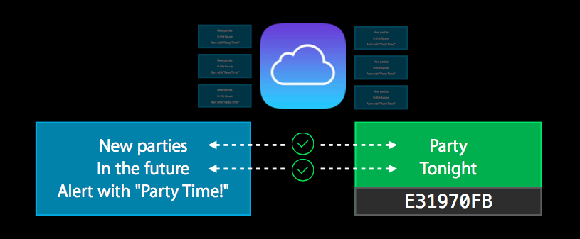
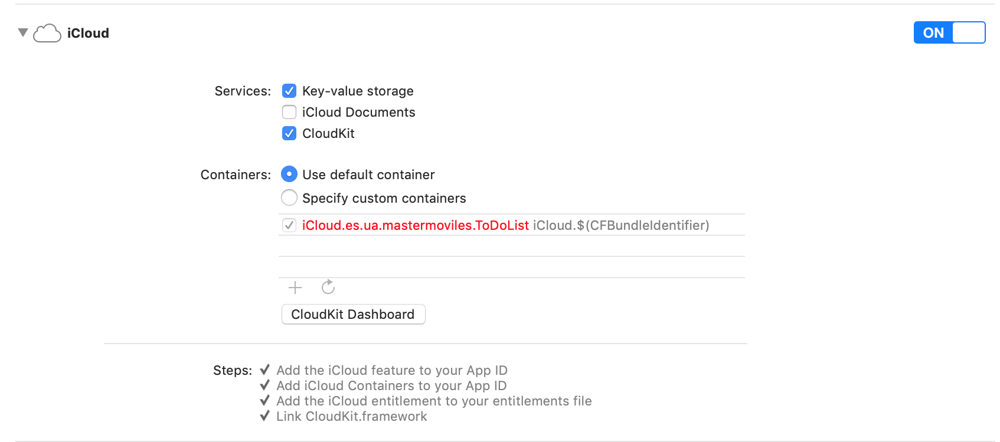

Sesión 3: iCloud y CloudKit¶
iCloud¶

iCloud es un servicio de Apple que permite a un usuario acceder a su contenido personal (datos, documentos) en todos sus dispositivos utilizando su Apple ID.
iCloud consigue esto combinando almacenamiento en la nube y APIs dedicadas integradas en el sistema operativo.
Apple proporciona la infraestructura de servidores, de transmisión de datos y de cuentas de usuario, facilitando el trabajo a los desarrolladores que no necesitan crear sus propios servicios ni recurrir a soluciones de terceros.
Filosofía de iCloud para el usuario de iOS¶
Un escenario frecuente es que un usuario tenga una app instalada en más de un dispositivo (un iPhone y un iPad, por ejemplo). Por ejemplo es muy común usar la app de fotos, la del calendario, o las notas en cualquier dispositivo.
En este escenario, la idea principal de iCloud es que el usuario pueda pasar de un dispositivo a otro y seguir trabajando con el mismo estado de la app tal y como la dejó en el dispositivo anterior.
Para el usuario, los cambios aparecen automáticamente en todos los dispositivos conectados a la cuenta iCloud.
Cuenta iCloud¶

Todo usuario de Apple puede activar una cuenta de iCloud usando su Apple ID. Casi todos los usuarios de dispositivos Apple tienen activada esta cuenta.
Permite mantener el estado en aplicaciones ejecutándose en distintos dispositivos asociados al mismo Apple ID: Recordatorios, Notas, etc.
El sistema operativo encripta todos los datos antes de transmitirlos a los servidores de iCloud, los cuales almacenan los datos también en formato encriptado. Se utilizan tokens para la autenticación.
De forma gratuita Apple proporciona 5Gb de espacio en la cuenta de iCloud.
Nota
La cuenta de iCloud puede activarse desde el simulador. Si es la primera vez que usas iCloud desde el simulador debes logearte con tu Apple Id en icloud.com y aceptar los términos.
Distintas APIs¶
Bajo el nombre genérico de iCloud, existen distintas APIs que Apple ha ido proporcionando a los desarrolladores para gestionar datos asociados a la cuenta de usuario:
- Almacenamiento clave-valor en iCloud: para mantener el estado de la aplicación (puntuación de un juego, última página leída, etc.).
- Documentos en iCloud: para gestionar documentos en la nube y mantenerlos sincronizados entre iPhone/iPad/Mac.
- iCloud con Core Data: para mantener de forma automática en iCloud una copia de todos los datos de la app gestionados con Core Data. Versión inicial con muchos problemas, muy mejorado en las últimas versiones.
- CloudKit: nueva tecnología a partir de iOS 8
que permite mayor flexibilidad y control. Basado en la gestión en la
nube de registros con diccionarios clave-valor, con un enfoque muy
similar a las tecnologías NoSQL.
- Se trata de un API de peticiones a los servidores en la nube, que no mantiene un estado local. Es conveniente usarla en combinación con Core Data, si queremos hacer persistentes en local los datos existentes en la nube.
- Basada en peticiones y respuestas asíncronas.
Vamos a ver en esta sesión el almacenamiento clave-valor y CloudKit, que son las APIs más usadas.
Preparación de aprovisionamiento y permisos para iCloud¶
Para desarrollar con iCloud es necesario estar registrado como desarrollador en el programa de desarrollo de Apple. También puedes hacerlo con tu Apple ID registrado en el equipo de la UA.
Para usar los servicios de iCloud es necesario crear un perfil de aprovisionamiento con un App Id concreto, añadir el servicio de iCloud y activar el permiso (capabilities) en la app con XCode.
Si estás registrado en el equipo de desarrollo con un rol de administrador (o tienes una cuenta de pago en la que tienes todos los permisos de tu equipo), se puede hacer todo automáticamente desde Xcode.
Creación del App ID¶
Para trabajar con iCloud clave-valor puedes utilizar el perfil de
aprovisionamiento Master Moviles iCloud creado en el member
center del equipo de la universidad. El bundle ID de la app debe
ser es.ua.mastermoviles.iCloud.
También hemos actualizado el perfil Master Moviles ToDoList para
incluir los permisos de uso de iCloud y CloudKit.
Se debe crear el App ID que otorgue la capacidad de acceso a iCloud.
Hemos creado el permiso (App ID) Master Moviles iCloud con el
bundle name es.ua.mastermoviles.iCloud que incluye la capacidad de
iCloud.

La activación del permiso de iCloud aparecerá en amarillo porque requiere una configuración posterior relacionada con CloudKit (lo veremos más adelante). Pero es suficiente para trabajar con iCloud clave-valor.
iCloud clave-valor¶
API de almacenamiento clave-valor¶

Permite guardar y recuperar en iCloud claves y valores desde los dispositivos en los que el usuario está registrado con su Apple Id.
Para gestionar estos valores debemos usar la clase NSUbiquitousKeyValueStore.
Puedes almacenar Strings, valores escalares como BOOL o
Double, diccionarios y también objetos de cualquiera de los
siguientes tipos: NSNumber, NSString, NSDate, NSData,
NSArray, or NSDictionary.
El espacio de almacenamiento total, para un usuario dado y una app, es de 1 MB y un máximo de 1024 claves.
Para obtener el objeto compartido iCloudKeyValueStore:
1 | let iCloudStore = NSUbiquitousKeyValueStore.default |
Método synchronize¶
1 | func synchronize() -> Bool |
Devuelve true si las claves y valores en memoria y en disco están
sincronizados o false si ha sucedido algún error. Por ejemplo,
devuelve false si la app no se ha compilado con las peticiones
adecuadas de entitlement o si el usuario no está logeado e iCloud.
Los cambios al almacén de claves-valor se salvan en memoria. El sistema sincroniza automáticamente estos datos con la caché del disco en los momentos apropiados. Por ejemplo, cuando el app pasa a segundo plano o cuando se reciben cambios de iCloud.
Este método no fuerza la subida a iCloud de los nuevos valores y claves, sino que hace saber a iCloud que los valores están listos para ser subidos. El sistema controla cuándo subir los datos.
No es obligatorio su uso, pero es recomendable cuando estamos trabajando con el simulador para asegurarnos de que el almacén de claves-valor se guarda.
Se recomiendo también hacerlo después de lanzar la app o cuando vuelve al primer plano.
Ejemplo de uso de synchronize al lanzar la app¶
1 2 3 4 5 6 7 8 9 10 11 12 13 14 15 16 17 18 | @UIApplicationMain class AppDelegate: UIResponder, UIApplicationDelegate { var window: UIWindow? let store = NSUbiquitousKeyValueStore.default func application(_ application: UIApplication, didFinishLaunchingWithOptions launchOptions: [UIApplication.LaunchOptionsKey: Any]?) -> Bool { // Override point for customization after application launch. if (store.synchronize()) { print("Sincronización OK") } else { print("Problemas en la sincronización") } } ... } |
Guardar valores en el almacén de claves-valor¶
Para actualizar los valores hay que usar los métodos set. El primer parámetro es el valor a guardar y el segundo la clave:
set(Bool, forKey: String)set(Double, forKey: String)set(Int64, forKey: String)set([Any]?, forKey: String)- ...
Por ejemplo,
set(Int64, forKey: String) actualiza en el almacén el valor long long (Int64) asociándolo a una clave especificada:
1 | store.set(100, forKey: "puntuacion") |
Obtención de valores del almacén de claves-valor¶
Funciones que obtienen los distintos tipos de datos a partir de una clave (una cadena):
array(forKey: String) -> [Any]?bool(forKey: String) -> Booldictionary(forKey: String) -> [String : Any]?string(forKey: String) -> String?longLong(forKey: String) -> Int64- ...
forKey es el String que es la clave en el almacén de claves-valor.
Devuelve el valor asociado a la clave o nil si la clave no existe
(0 en el caso de los métodos que devuelven un valor numérico).
Por ejemplo, longlong(forKey: String)
devuelve el valor Int64 asociado a una clave especificada:
1 | let puntuacion = Int(store.longLong(forKey:"puntuacion")) |
Definición de un observador de cambios¶
Además de almacenar los valores podemos recibir notificaciones
(NSNotification
gestionadas por el
NotificationCenter)
de cambio de los valores en otros dispositivos conectados a iCloud.
En el lanzamiento del app hay que registrarse para la notificación
NSUbiquitousKeyValueStoreDidChangeExternallyNotification.
La notificación se envía cuando el valor de una o más claves han cambiado debido a datos que han llegado desde iCloud. La notificación no se envía cuando la propia app ha cambiado los valores.
El diccionario atributo userInfo de la notificación contiene la
razón de la notificación, así como una lista de los valores
cambiados.
El objeto en la notificación es el NSUbiquitousKeyValueStore cuyo
contenido ha cambiado.
Por ejemplo, en el siguiente código se registra como observador un
método de la propia clase AppDelegate:
1 2 3 4 5 6 7 8 9 10 11 12 13 14 15 16 17 18 19 | func application(_ application: UIApplication, didFinishLaunchingWithOptions launchOptions: [UIApplication.LaunchOptionsKey: Any]?) -> Bool { // Override point for customization after application launch. if (store.synchronize()) { print("Sincronización OK") } else { print("Problemas en la sincronización") } NotificationCenter.default.addObserver( self, selector: #selector(muestraValoriCloud(notification:)), name: NSUbiquitousKeyValueStore.didChangeExternallyNotification, object: nil) return true } @objc func muestraValoriCloud(notification: Notification){ let valoriCloud = Int(store.longLong(forKey: "puntuación")) // Actualizamos el valor en el controller } |
Demo¶
- Mostramos la app
iCloudKeyValue, primero la versión sin comunicación con iCloud clave-valor y después la que utiliza iCloud clave-valor para guardar el valor del contador. - Mostramos la app ejecutándose en dos dispositivos simultáneamente y mostrando cómo los cambios en un dispositivo se actualizan en el otro.

CloudKit¶
Introducción a CloudKit¶

El origen de CloudKit es un proyecto interno de Apple en el que se basan muchas de sus APIs de persistencia. Su uso se ofrece a les desarrolladores en la WWDC de 2014, para apps a partir de iOS 8.
Permite gestionar datos remotos ubicados en los servidores de iCloud propios de Apple.
En los datos propios de la aplicación (datos privados del usuario) el almacenamiento se imputa a las cuentas iCloud de los usuarios.
Existe la posibilidad de datos públicos, en un almacenamiento gestionado por el desarrollador (gratuito hasta una capacidad y de pago a partir de ella).
Permite datos estructurados y datos bulk.
Los datos están en la nube e iCloud proporciona una tecnología de transporte, basada en peticiones de registro, de lectura y de búsqueda. Los datos obtenidos se almacenan en la aplicación. Si queremos hacerlos persistentes de forma local (para que estén disponibles sin conexión) podemos utilizar otra tecnología como Core Data.
Tecnología de transporte¶
CloudKit no proporciona ninguna forma de almacenar datos localmente.
Es un servicio para mover datos a y desde iCloud y no está pensado para reemplazar los modelos de datos ya existentes en tu app (CoreData).
El objetivo del framework es complementar estos modelos con una forma de empaquetar los datos para iCloud y recibir actualizaciones posteriores sobre esos datos.
Con CloudKit, tu eres el responsable de mover los datos desde tu app a iCloud y desde iCloud a la app. Aunque CloudKit proporciona facilidades para mantenerte informado cuando sucede un cambio, tu debes obtener esos cambios explícitamente.
Debido a que eres el responsable de obtener y salvar los datos, debes de asegurarte de que los datos se obtienen en el momento oportuno y en el orden correcto, y de manejar los errores que se producen.
Elementos de CloudKit¶
- Contenedores
- Bases de datos
- Registros
- Zonas de registros
- Identificadores
- Referencias
Contenedores¶

Múltiples apps y usuarios tienen acceso a iCloud, pero los datos se
encuentran segregados y encapsulados en particiones llamadas
contenedores.
Los contenedores de tus apps no pueden ser usados por apps de otro desarrollador.
Es posible compartir un contenedor entre varias apps, siempre que hayan sido desarrolladas por el mismo desarrollador.
Cada contenedor tiene un nombre único. El nombre del contenedor con el que trabaja la app se define en la configuración de capabilities de Xcode y en el App ID del perfil de aprovisionamiento.
Los contenedores no pueden borrarse.
Clase CKContainer¶
La clase con la que trabajar para gestionar el contenedor es CKContainer
La debemos usar para:
- Obtener las bases de datos públicas y privadas
- Obtener el identificador del contenedor
- Determinar el estado del acceso de la cuenta iCloud del usuario
- Solicitar y determinar permisos de la app
- Ejecutar operaciones sobre el contenedor
- Descubrir registros de usuarios
En CloudKit todas las operaciones son asíncronas: se pasa el código de callback al que se llamará cuando la petición devuelva la respuesta.
Datos públicos y privados¶
Se pueden guardar datos de forma pública y privada, dependiendo de si se guardan en la base de datos pública o en la privada.
Los datos públicos son accesibles a todos los usuarios de la app, aunque el usuario no se haya identificado con su cuenta de iCloud.
Los datos privados son sólo visibles por el usuario actual logeado en iCloud.
Para salvar datos en la base de datos pública es necesario que el usuario esté identificado, porque siempre se guarda el usuario propietario del registro.
Bases de datos¶


Las bases de datos son instancias de la clase
CKDatabase
Cada app tiene acceso a dos bases de datos:
- Base de datos pública
- Base de datos privada
Se obtienen a través del CKContainer:
1 2 3 | let container = CKContainer.default() let privateDB = container.privateCloudDatabase let publicDB = container.publicCloudDatabase |

Dashboard¶
Dashboard es una interfaz web con la que podemos gestionar nuestros contenedores y bases de datos.
https://icloud.developer.apple.com/dashboard/

La interfaz web permite:
- Crear, visualizar, editar y borrar tipos de registros, registros, etc.
- Estadísticas de uso
- Administración de acceso Configuración de despliegue
Ejemplo de visualización de tipos de registros:

CloudKit trabaja sobre registros en iCloud¶
CloudKit proporciona una forma de mover datos estructurados entre tu aplicación y iCloud.
A diferencia de las bases de datos relacionales tradicionales, en las que el modelo de datos se basa en tablas, en CloudKit se trabaja con tipos de registros.
Un tipo de registro se define dinámicamente, en tiempo de ejecución de la app, por un nombre y un conjunto de claves. Una instancia concreta de un registro tiene un identificador único y es un diccionario de parejas clave-valor con cada clave representando un campo del registro.
El valor de cada campo suele ser un tipo de datos simple como una cadena, una fecha o un número, pero es posible almacenar también bloques de datos arbitrarios (ficheros),
Es posible guardar en los valores referencias a otros registros, permitiendo definir relaciones entre registros.
Por ejemplo, en la siguiente figura se muestran dos tipos de registros
con sus campos asociados. El nombre del primer tipo de registro es
Artwork y el del segundo Artist.
Nota
En iCloud se dispone de dos tipos de entornos: el entorno de desarrollo y el de producción. Cuando se desarrolla la app se construyen de forma dinámica los tipos de registros, con sus identificadores y sus campos. Después se debe desplegar estos tipos de registros al entorno de producción, en donde ya no es posible modificar los tipos de registro.
Registros¶
Una base de datos está compuesta de registros:

Las instancias de registro son objetos de la clase CKRecord.
Cada instancia es un conjunto de parejas clave y valor (determinados
por el tipo de registro) y tiene un identificador único, un objeto de
la clase
CKRecord.ID. Este
identificador único podemos proporcionarlo en el momento de creación
del registro o podemos dejar que se inicializa automáticamente, si no
lo definimos.
Para crear una instancia de registro es necesario identificar el tipo
de registro, definido por un String:
1 | let artistaRecord = CKRecord(recordType: "Artista") |
Si es la primera vez que se crea un registro de ese tipo, se crea el tipo de registro dinámicamente en la base de datos.
- Una vez creado el registro se añaden valores a sus campos (que también se crean dinámicamente):
1 2 3 4 | artistaRecord["artista"] = "Jonhn Lennon" let formatter = DateFormatter() formatter.dateFormat = "yyyy/MM/dd" artistaRecord["fechanacimiento"] = formatter.date(from: "1940/10/09")! |
Datos en los registros¶
Es posible definir los siguientes tipos de valores que pueden haber en los campos de los registros:
NSString(String): CadenasNSNumber(Int,Double, ...): Números, incluidos enteros y punto flotante.NSData: Bytes arbitrarios de datos (por ejemplo, la serialización binaria de unstruct. No usar para almacenar ficheros binarios grandes, usarCKAsseten su lugar.NSDate: FechasCLLocation: Coordenadas geográficasCKReference: Referencias a otros registros para crear relaciones entre ellos.CKAsset: Fichero binario.- Arrays de todo lo anterior
Grabación de registros¶
Se añaden registros a una base de datos usando la función
save,
a la que hay que pasar un bloque que recibe el registro salvado y un
error (en caso en que no se haya podido salvar).
1 2 3 4 | privateDB.save(toDoItemRecord, completionHandler: { (record: CKRecord?, error: Error?) in print("Error: \(String(describing: error))") }) |
Relaciones entre registros: referencias¶
Es posible definir relaciones entre los registros. Por ejemplo un
Artwork está relacionado con un Artist. Son similares a las claves
ajenas en el tradicional modelo relacional con las que se implementan
relaciones muchos-a-uno.


La clase CKReference es la utilizada para definir estas relaciones:
1 | itemRecord["owningList"] = CKReference(record: listRecord, action: .deleteSelf) |
La constante .deleteSelf indica que si el registro referenciado se
borra, el propio registro también debe borrarse (borrado en
cascada). La otra posible acción es .none.
Queries¶
Para realizar una consulta se debe utilizar la clase
CKQuery
para buscar objetos que cumplen una determinada condición en una base
de datos.
La consulta almacena los parámetros de búsqueda, incluyendo el tipo de registros a buscar, el criterio (predicado) a aplicar, y el parámetro de ordenación que aplicar a los resultados.
El objeto de la búsqueda se usa para ejecutar una consulta en la
base de datos usando el método
perform
Se le pasa un manejador al que se llamará cuando se obtengan los
resultados. La operación de búsqueda se restringe a los objetos de
una zona (se pasa nil para la zona por defecto).
Para realizar consultas con más control sobre el número de registros
devueltos, o utilizar un cursor definido por el límite de registros
devueltos, hay que realizar una
CKQueryOperation.
Por ejemplo, la query que devuelve todos los registros de tipo "Tarea" de la base de datos privada del usuario actual es la siguiente (se ha añadido código de ejemplo en el que se actualiza el array de tareas por hacer y se actualiza la vista de la tabla)
1 2 3 4 5 6 7 8 9 10 11 12 13 14 15 16 17 18 | let privateDB = CKContainer.default().privateCloudDatabase let query = CKQuery(recordType: "Tarea", predicate: NSPredicate(value:true)) privateDB.perform(query, inZoneWith: nil, completionHandler: { (results, error) in if error == nil { for result in results! { if let nombre = result["nombre"] { let toDoItem = ToDoItem(nombre: nombre as! String, publica: false) self.toDoItems.append(toDoItem) } } DispatchQueue.main.async( execute: { self.tableView.reloadData() }) } else { print("Query error: \(String(describing: error))") } }) |
Importante
Para que funcione la consulta que recupera todos los registros de
un tipo hay que crear en el dashboard un índice queryable sobre
el campo nativo recordName.
Otros ejemplos de predicados (consultar CKQuery y NSPredicate)
1 2 | let predicate = NSPredicate(format: "nombre BEGINSWITH 'Limpiar'") let predicate = NSPredicate(format: "favoriteColors CONTAINS 'red'") |
Operaciones con registros obtenidos¶
Un ejemplo de código en el que borramos los registros de tipo "Tarea" cuyo nombre coincide con un nombre:
1 2 3 4 5 6 7 8 9 10 11 12 13 14 15 16 | func deleteTarea(_ toDoItem: ToDoItem) { let query = CKQuery(recordType: "Tarea", predicate: NSPredicate(format: "nombre == %@", argumentArray: [toDoItem.nombreItem])) let publicDB = CKContainer.default().publicCloudDatabase publicDB.perform(query, inZoneWith: nil, completionHandler: { (results, error) in if error == nil { for result in results! { let record: CKRecord! = result as CKRecord publicDB.delete(withRecordID: record.recordID, completionHandler: { (recordID, error) in print("Error: \(String(describing: error))") }) } } }) } |
Características sociales de CloudKit¶

CloudKit permite descubrirse entre ellos a usuarios que están usando nuestra app. Los usuarios podrán compartir datos de identidad (nombre de usuario y correo elctrónico) si:
- Están en los contactos del usuario actual
- Han dado el permiso a la app
Para que otros usuarios puedan acceder a la información del usuario
actual, hay que solicitarle su aprobación llamando a la función
requestApplicationPermission
Se le pasa como parámetro completionHandler el manejador de la
respuesta del usuario. Recibiremos dos parámetros, el
applicationPermissionStatus (constante que indica lo que ha
respondido el usuario) y un objeto error que será nil si todo ha
ido correctamente.
Se pueden buscar los usuarios que han dado permiso y que están en la agenda del usuario actual por su dirección de correo electrónico registrada en el Apple Id.
La función
discoverAllIdentities(completionHandler:)
de CKContainer permite obtener estos usuarios
Se le pasa como parámetro completionHandler, una función que
la consulta ejecutará cuando se obtengan los resultados. Tiene
dos parámetros:
-
Un array de objetos
CKUserIdentityque corresponde con los contactos del usuario que han autorizado conocerlos. Si no hay usuarios, el array estará vacío. -
Un objeto error si sucede algún problema, o
nilsi los IDs se han obtenido correctamente.
Ejemplo de código:
1 2 3 4 5 6 7 8 9 10 11 12 13 14 15 16 17 18 19 | let container = CKContainer.default() print("Container: ") print(container) // Solicitamos permiso para que el usuario se haga descubrible container.requestApplicationPermission( CKApplicationPermissions.userDiscoverability, completionHandler: { (permissionStatus, error) in print("Permiso concedido: " + "\(permissionStatus == CKApplicationPermissionStatus.granted)")}) // Obtenemos los usuarios de la app que han dado permiso container.discoverAllIdentities(completionHandler: { (optUsers, error) in if let users = optUsers { for user in users { print(user) // usamos user.userRecordID para buscar // registros públicos de un usuario } }}) |
Suscripciones¶

Es posible hacer consultas "permanentes" que son ejecutadas en background por el servidor tras cada registro salvado.
Generan notificaciones push con los resultados.
CloudKit JS¶

CloudKit JS es una librería que proporciona un API JavaScript para acceder a los datos en los contenedores CloudKit.
Lanzado en WWDC 2015.
Necesita un token generado en el dashboard para acceso seguro al API en la conexión servidor-servidor.
Permite autentificarse y realizar peticiones seguras JavaScript desde una aplicación web para acceder a los datos de CloudKit.
Sistema usado por la interfaz web de las apps de Apple en la página web de iCloud (Notas, Photos, etc.)
Un ejemplo de aplicación web presentado por Apple en el que se demuestra el uso de esta librería CloudKit Catalog
Demo¶
Gestión en el member center¶

Una de las opciones del member center permite gestionar contenedores de iCloud.
Utilizaremos un contenedor con el identificador iCloud.es.ua.mastermoviles.ToDoList que utilizaremos en la app ToDoList.
Asignación del container al App ID¶
Incluimos en el App ID Master Moviles ToDoList (con el bundle Id
es.ua.mastermoviles.ToDoList) el contenedor de iCloud anterior.

Creación del perfil de aprovisionamiento¶
Actualizamos el perfil de aprovisionamiento Master Moviles ToDoList
con el App ID anterior.
Actualización de capacidades de la app ToDoList¶

Ejecutamos la app ToDoList¶
Ejecutamos la app ToDoList modificada para trabajar con CloudKit y
comprobamos cómo se guardan las tareas, a pesar de eliminarlas de la
memoria. Las tareas se cargan de la base de datos cuando la app se
inicializa, en el método viewDidLoad.
Mostramos cómo se añaden registros en las bases de datos públicas y privadas.

Dashboard¶
Comprobamos también el Dashboard y vemos cómo se actualiza conforme guardamos nuevos registros.
El administrador del equipo de desarrollo puede gestionar permisos para el resto de miembros. Los permisos se definen a nivel de contenedor.
https://icloud.developer.apple.com/dashboard/
Comprobamos los permisos de los miembros del equipo de la universidad en el dashboard de iCloud.

Los tipos de registros:
Y los logs:

Práctica¶
Práctica: iCloud clave-valor¶
-
Descarga la app
iCloudKeyValueen la que se muestra un controller de tipo Stepper y una etiqueta con un número que va cambiando según se pulsa el controller. -
Comprueba que si matas la app se pierde el valor introducido.
-
Modifica la app, añadiendo código para que cada vez que se cambie el número se guarde en iCloud clave-valor. Implementa también una notificación para que si se modifica el valor en otro dispositivo se actualice en el dispositivo actual. Puedes probarlo modificando el valor en el simulador y deberá actualizarse en un dispositivo físico en el que estés logeado con el mismo Apple ID (al revés no funciona: si cambias el valor en el dispositivo físico, no se actualiza en el simulador, porque no funciona el
NotificationCenter).
Práctica: ToDoList en CloudKit¶
- Configuración de la app:
- Seguimos trabajando con el proyecto
ToDoListy el bundle IDes.ua.mastermoviles.ToDoListy el perfil de aprovisionamientoMaster Moviles ToDoList(lo hemos actualizado para que incluya el permiso de acceso a CloudKit). - Actualiza en Xcode el permiso para utilizar CloudKit y el
contenedor
iCloud.es.ua.mastermoviles.ToDoList.
- Seguimos trabajando con el proyecto
- Desarrollo de la práctica:
- Añade el código necesario para que las tareas pendientes se guarden y recuperen de la base de datos privada de CloudKit.
- (Opcional): Utiliza la base de datos pública para publicar tareas compartidas por todos los usuarios de la app. Al añadir una tarea debes permitir la opción de hacerlo en la base de datos pública. Muestra el texto de las tareas públicas en un color diferente en el listado de tareas.
- (Opcional): Añade una funcionalidad en la que se recargue la tabla con los datos de iCloud cuando se tire de la tabla hacia abajo.
Pista para actualizar la tabla¶
- Los callbacks en los que se reciben los resultados de las queries son asíncronos y se procesan en hilos secundarios.
- Si actualizamos los datos de la tabla en un callback de este tipo, la interfaz de usuario no se refrescará hasta que el usuario no interactúe con la tabla.
- Se puede forzar a ejecutar la actualización de los datos de la tabla en
el hijo principal con este código en algún lugar del
ToDoListTableViewController:
1 2 3 | DispatchQueue.main.async( execute: { self.tableView.reloadData() }) |